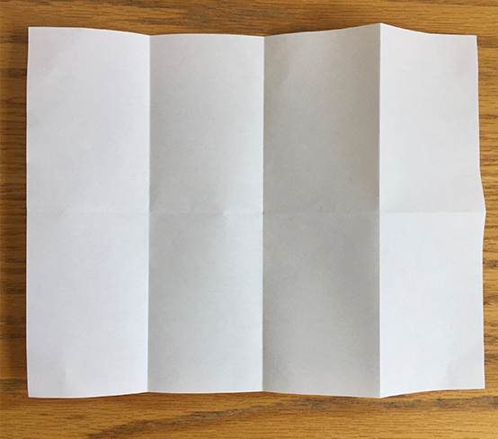
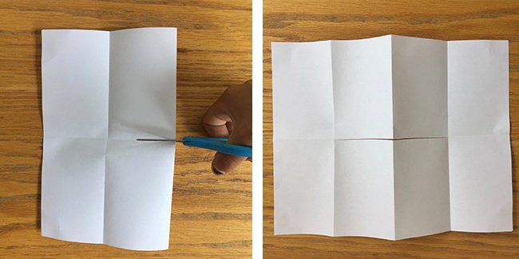
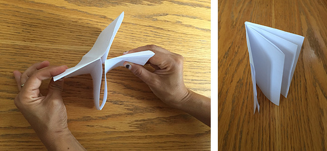

What is a zine?
Zines are tangible, self-published love in the form of little hand-made books. They are love letter from the author to a topic that they are passionate about, often writen with the intention to educate, for self expression or to exchange ideas and skills. They can be about anything!
Though folks have been self-publishing their ideas since they were physically able, the term "zine" originated in the 1950s as part of science-fiction fandom -- short for "fan magazine". These "fanzines" were collections of fan submitted art, articles and letters. In the 1970s, punk really embraced the form of the zine, writing about punk rock and hardcore music, DIY, anarchism, and other facets of punk culture. Out of punk grew Queercore (80's), a social movement criticizing society's disapprocal of LGBT rolds, and Riot Grrls (90's), a subculture / music genre critisizing sexism. Both used zine to express their ideas.
Zines can be read anonymously. Zines can be published anonymously. Most zines can be found for $1-$10, and many zine makers are willing or eager to trade. Zine making is not a profit driven venture. Some folks even give their zine away.
Why should you write a zine?
In the age of the internet, blogs are a form of self-publishing that anyone can do. But yet, folks still make zines!
Unlike blogs, zines cannot be censored. Zines do not vanish because a campany/weblog shut down. Zines do not attract trolls and terrible comment sections. Zines seem to have a deeper impact and influence, as their tactile nature makes them inviting to share with others in a meaningful way. It's not easy to "spam" zines, so folks are more likely to actually read them and conside what they have to say. Also, unlike blogs, you can send zines in the mail! Folks love receiving non-bill mail.
Due to their size relative to most books, zines are a more accessible way to begin to learn about a topic. A book is a sizable time commitment, but most zines can be read in an afternoon or less. There's a lot of red tape that goes into getting books published and distributed. A zine gives you unfettered access to the author's intentions. You know that they have not been censored beacuse their ideas were through too far for a main stream audience.
How do you make a zine?
Making your first zine is easy! All you need is a sheet of paper, scissors, something to write with and an idea
Step one: Fold your sheet of paper in half. Fold it again into quarters, and then one more time so that it is folded into eighths.

Step two: Open your paper so that it is folded in half. Cut halfway across the middle from the fold. When you open your paper it should have a slit in the middle.

Step three: Fold your paper lengthwise (along the crease that has the slit). Hold the paper at either end, then push the ends in toward each other. The sections should fold into each other to form an eight-page booklet.

Step four: Now it’s time for you to fill in your blank booklet and turn it into a zine! How you fill it in is completely up to you. You can plan or sketch out your content before making it final, or just wing it. Use the basic supplies only or add extra elements. If you want to just write and not use images, that’s cool too.